導數的應用
📌 本章要解決的核心問題
導數不只是用來計算變化率——它是分析函數行為、解決最佳化問題、求極限、逼近函數值、甚至尋找方程根的萬能工具。本章系統性地展開導數的應用全景：從現實世界的相關變率問題，到用線性函數逼近複雜函數；從尋找函數的最大最小值，到理解函數圖形的每一個幾何細節；從處理「$\frac{0}{0}$」這種看似無法定義的極限，到用迭代法逼近方程的解。這十個小節共同構成了微積分最豐富的應用工具箱。
🔑 關鍵概念（10 條）
- 相關變率（Related Rates）：利用鏈鎖律，將不同量的變化率關聯起來——解決現實世界中的動態問題
- 線性近似（Linear Approximation）：用切線在局部逼近函數值——$f(x) \approx f(a) + f'(a)(x-a)$
- 微分（Differentials）：$dy = f'(x)dx$——用微小變化量估計函數值的變化，並量化測量誤差
- 極值定理（Extreme Value Theorem）：閉區間上的連續函數必定有絕對最大值和最小值
- 臨界點（Critical Points）：$f'(c)=0$ 或 $f'(c)$ 不存在——局部極值的候選點
- 均值定理（Mean Value Theorem）：存在 $c$ 使得 $f'(c)=\frac{f(b)-f(a)}{b-a}$——連接導數與函數值的橋樑
- 一階導數檢定法（First Derivative Test）：根據 $f'(x)$ 的符號變化判斷局部極值的類型
- 凹性與反曲點（Concavity & Inflection Points）：$f''(x)>0$ 表示凹向上，$f''(x)<0$ 表示凹向下
- 羅必達法則（L'Hôpital's Rule）：$\lim\frac{f(x)}{g(x)}=\lim\frac{f'(x)}{g'(x)}$——處理 $\frac{0}{0}$ 和 $\frac{\infty}{\infty}$ 不定型
- 反導數（Antiderivatives）：$\int f(x)dx = F(x) + C$——微分運算的逆過程，為積分學鋪路
🧭 本章推理地圖
導數描述瞬時變化率（§4.1–§4.2） → 用線性近似簡化複雜函數 → 一階導數決定增減與臨界點（§4.3–§4.5），找出極值 → 二階導數判斷凹凸性（§4.5），畫出精確圖形 → 無窮遠處行為（§4.6）用極限分析漸近線 → 以上工具匯聚成 最佳化問題（§4.7）：在約束下求最大利益或最小成本 → 羅必達法則（§4.8）用導數破解不定型極限 → 反導數（§4.10）為第 5 章積分（Ch5）鋪路
4.1 相關變率（Related Rates）
在許多現實情境中，兩個或多個量同時隨時間變化，而且它們的變化率彼此相關。例如氣球充氣時，體積和半徑同時增加；飛機飛過頭頂時，飛機與觀察者的距離和水平距離同時改變。相關變率（related rates）就是用導數來描述這種動態關係的技術。
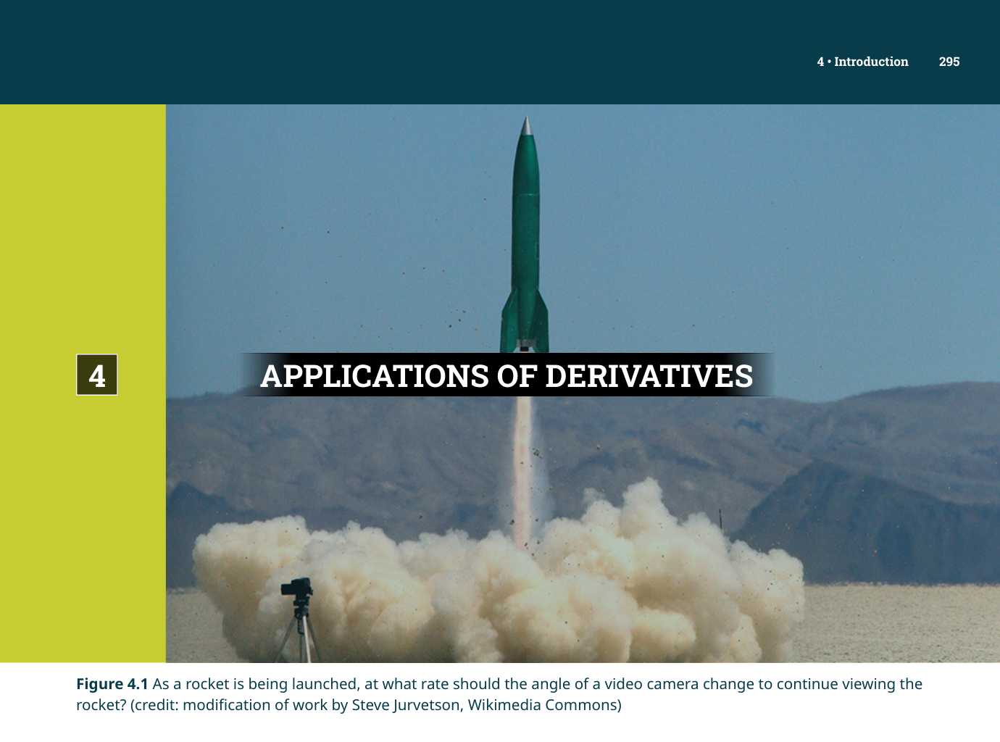
相關變率的核心工具是鏈鎖律（Chain Rule）。如果體積 $V$ 是半徑 $r$ 的函數，而 $r$ 又是時間 $t$ 的函數，則 $\frac{dV}{dt} = \frac{dV}{dr} \cdot \frac{dr}{dt}$。關鍵步驟不是微分本身，而是先建立變量之間的關係方程式，再對時間微分。
- 為所有變量賦予符號，必要時畫圖
- 以變量表示已知訊息和待求的變化率
- 找出變量之間的關係方程式
- 對時間 $t$ 微分（使用鏈鎖律）
- 代入已知數值，解出未知的變化率
氣球充氣問題
一個球型氣球以 $2 \text{ cm}^3/\text{sec}$ 的恆定速率被充氣。當半徑 $r = 3\text{ cm}$ 時，半徑增加的速度是多少？
球的體積公式為 $V = \frac{4}{3}\pi r^3$。對時間微分：$\frac{dV}{dt} = 4\pi r^2 \frac{dr}{dt}$。已知 $\frac{dV}{dt}=2$、$r=3$，代入得 $2 = 4\pi(9)\frac{dr}{dt}$，解得 $\frac{dr}{dt} = \frac{1}{18\pi} \approx 0.0177\text{ cm/sec}$。
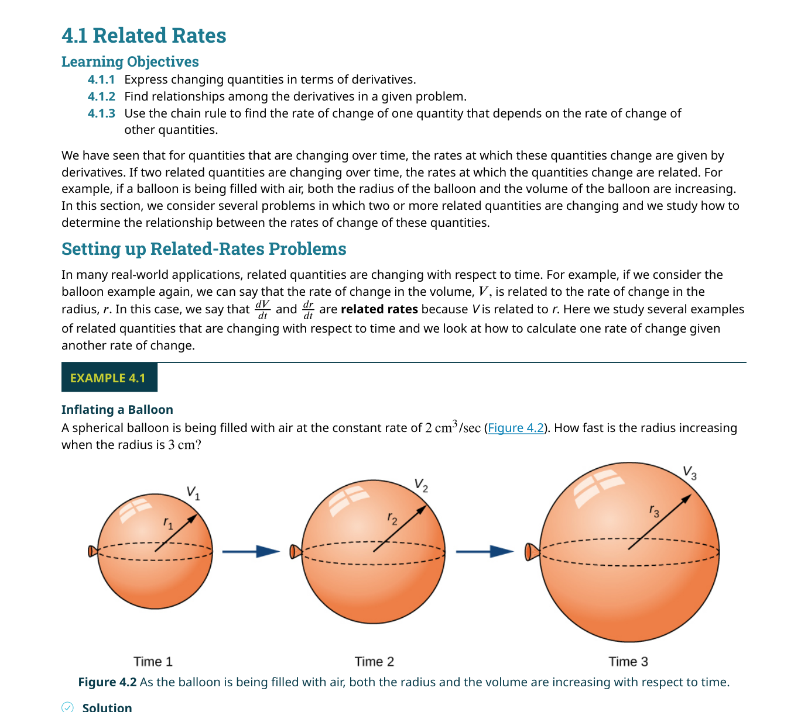
飛機飛越問題
一架飛機在 $4000\text{ ft}$ 的恆定高度以 $600\text{ ft/sec}$ 水平飛行。當飛機恰好飛越無線電塔正上方時，飛機與地面觀測者之間的距離變化率是多少？（觀測者在塔底 $3000\text{ ft}$ 處）
設 $x$ 為飛機在地面投影與觀測者的水平距離，$s$ 為飛機與觀測者的直線距離。由畢氏定理：$s^2 = x^2 + 4000^2$。微分得 $2s\frac{ds}{dt} = 2x\frac{dx}{dt}$。當飛機在塔正上方時 $x=3000$，此時 $s = \sqrt{3000^2 + 4000^2} = 5000$。已知 $\frac{dx}{dt}=600$，代入：$2(5000)\frac{ds}{dt} = 2(3000)(600)$，解得 $\frac{ds}{dt} = 360\text{ ft/sec}$。
只有在微分完成之後才能代入特定的數值。如果你在微分前就把 $x=3000$ 代入 $s^2 = x^2 + 4000^2$，會得到 $s^2 = 3000^2 + 4000^2$，這時 $x$ 就「凍結」成了常數，微分後 $\frac{dx}{dt}$ 會消失——你會得到 $\frac{ds}{dt}=0$ 的荒謬結論。
火箭發射問題
一枚火箭垂直上升，攝影機位於距離發射台 $5000\text{ ft}$ 處。當火箭高度 $h=1000\text{ ft}$ 且速度 $\frac{dh}{dt}=600\text{ ft/sec}$ 時，攝影機仰角 $\theta$ 的變化率是多少？
由 $\tan\theta = \frac{h}{5000}$，微分得 $\sec^2\theta \frac{d\theta}{dt} = \frac{1}{5000}\frac{dh}{dt}$。當 $h=1000$ 時，$\tan\theta = 0.2$，斜邊 $= \sqrt{5000^2 + 1000^2} = 1000\sqrt{26}$，$\sec\theta = \frac{\sqrt{26}}{5}$。代入：$(\frac{26}{25})\frac{d\theta}{dt} = \frac{600}{5000}$，解得 $\frac{d\theta}{dt} = \frac{3}{26} \approx 0.115\text{ rad/sec}$。
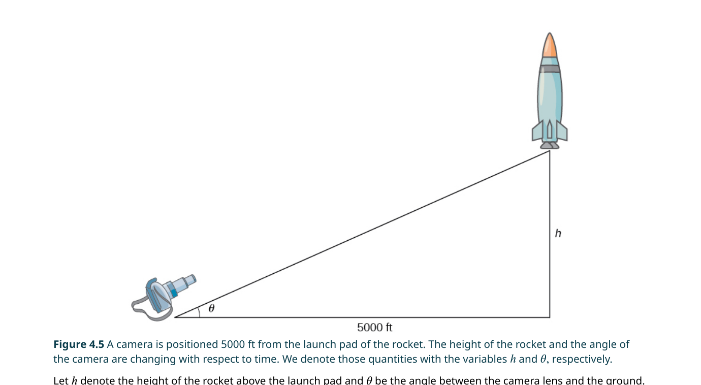
📝 範例
📝 範例 4.4：圓錐漏斗排水水從一個高 2 ft、頂部半徑 1 ft 的圓錐形漏斗以 $0.03\text{ ft}^3/\text{sec}$ 的速率排出。當水深 $\frac{1}{2}\text{ ft}$ 時，水面下降速率是多少？
解：由相似三角形得 $\frac{r}{h} = \frac{1}{2}$，即 $r = \frac{h}{2}$。圓錐體積 $V = \frac{1}{3}\pi r^2 h = \frac{1}{3}\pi (\frac{h}{2})^2 h = \frac{\pi}{12}h^3$。微分：$\frac{dV}{dt} = \frac{\pi}{4}h^2\frac{dh}{dt}$。已知 $\frac{dV}{dt} = -0.03$、$h = 0.5$，代入：$-0.03 = \frac{\pi}{4}(0.25)\frac{dh}{dt}$，解得 $\frac{dh}{dt} = -\frac{0.48}{\pi} \approx -0.153\text{ ft/sec}$。
相關變率問題中，量的增加對應正變化率，量的減少對應負變化率。當水從漏斗排出時，$\frac{dV}{dt}$ 是負的（體積在減少），因此得到的 $\frac{dh}{dt}$ 也是負的（水面在下降）。很多初學者會忘記放負號，導致答案完全錯誤。
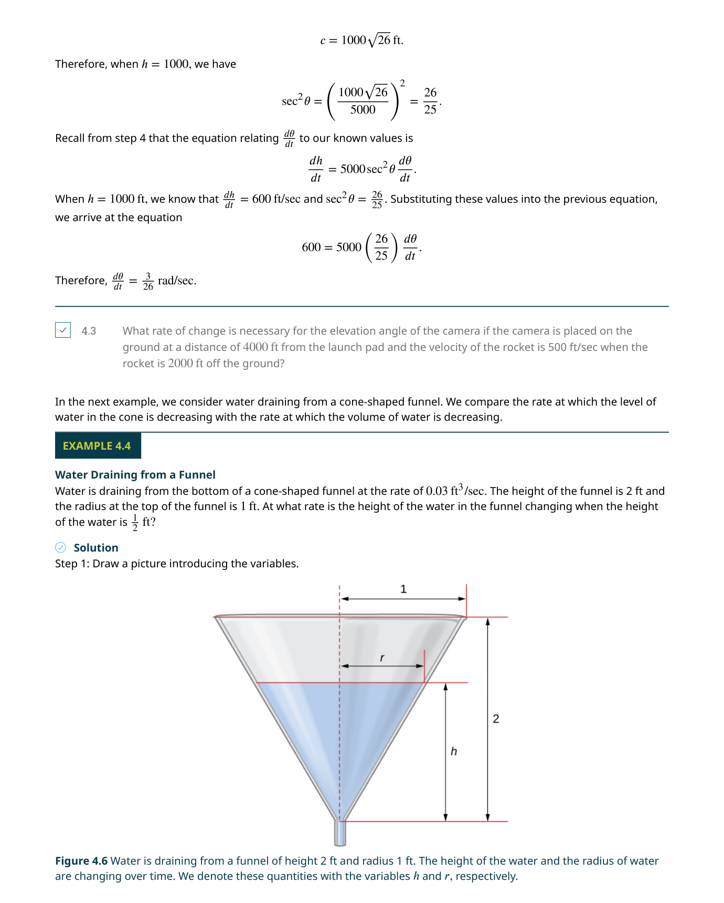
4.2 線性近似與微分（Linear Approximations and Differentials）
導數的一項根本應用是用線性函數來逼近非線性函數。對於一個在 $x=a$ 處可微的函數 $f$，它在 $a$ 附近的切線提供了對 $f(x)$ 的良好近似。這個想法非常強大：如果你需要估計 $\sqrt{4.1}$ 或 $\sin(31^\circ)$，不需要計算機——只需要一條切線。
線性近似（切線近似）
對於在 $x=a$ 可微的函數 $f$，其在 $a$ 處的線性近似（linear approximation）或線性化（linearization）定義為：
以 $f(x) = \sqrt{x}$ 在 $a=9$ 處為例。$f(9)=3$，$f'(x)=\frac{1}{2\sqrt{x}}$，$f'(9)=\frac{1}{6}$，因此 $L(x) = 3 + \frac{1}{6}(x-9)$。要估計 $\sqrt{9.1}$，代入 $x=9.1$：$L(9.1) = 3 + \frac{0.1}{6} \approx 3.0167$。真實值 $\sqrt{9.1} \approx 3.0166$——誤差極小！
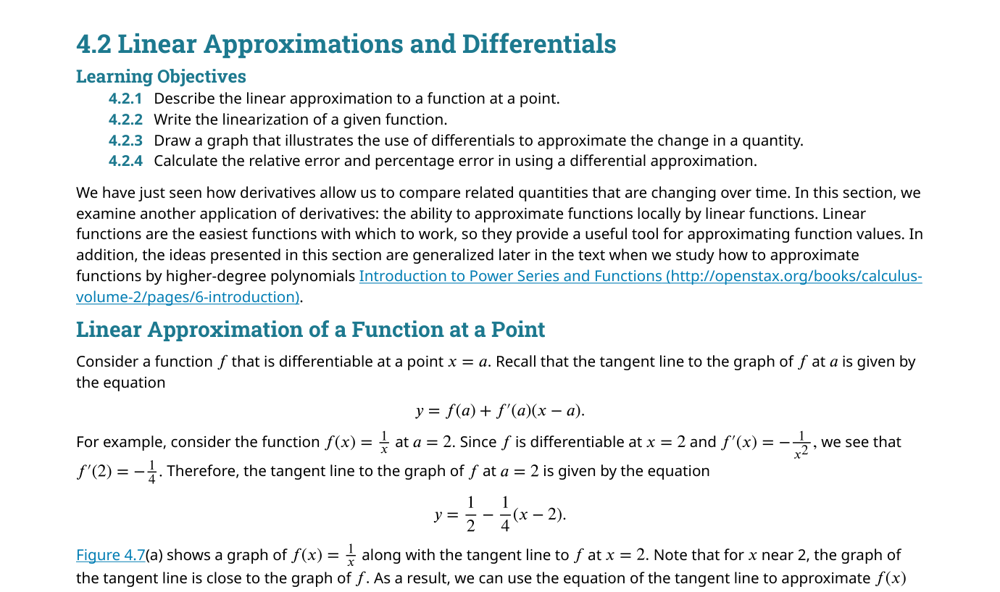
微分（Differentials）
線性近似也可以用微分（differential）的語言來表達。對於可微函數 $y = f(x)$，定義：
微分告訴我們：當 $x$ 改變一個小量 $dx$ 時，$y$ 的變化量 $\Delta y = f(x+dx) - f(x)$ 可以用 $dy = f'(x)dx$ 來近似。$|\Delta y - dy|$ 就是線性近似的誤差。
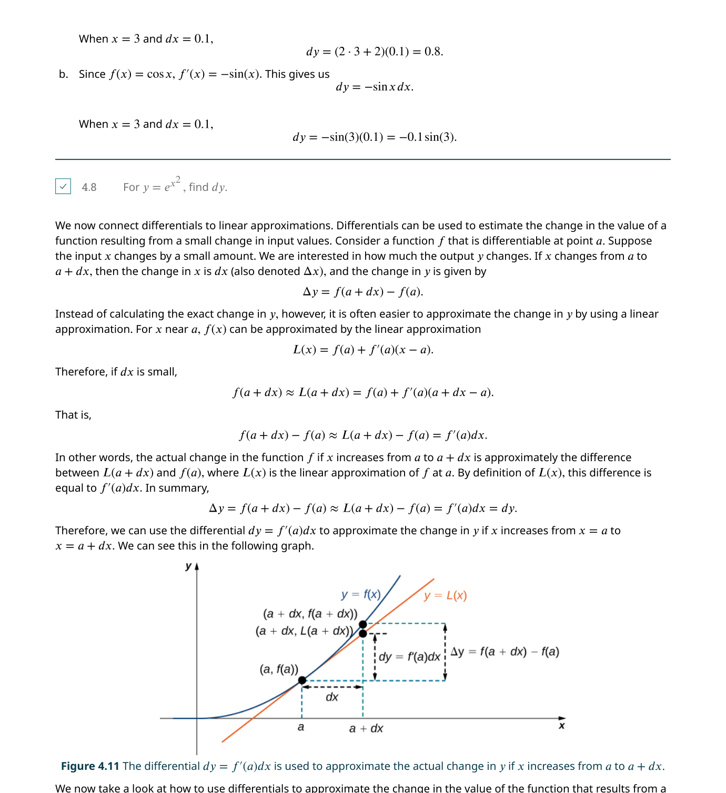
微分提供了一種極其簡便的方式來估計誤差傳播。當你測量一個量 $x$ 有誤差 $\pm dx$，這個誤差會如何影響依賴於 $x$ 計算出的量 $f(x)$？答案就是 $dy = f'(x)dx$。這在工程、物理和統計中無處不在。
📝 範例
📝 範例 4.10：立方體體積的誤差估計一個立方體的邊長被測量為 $5\text{ cm}$，測量精度為 $\pm 0.1\text{ cm}$。用微分估計體積的可能誤差。
解：體積 $V = x^3$，$dV = 3x^2 dx$。代入 $x=5$、$dx = \pm 0.1$：$dV = 3(25)(\pm 0.1) = \pm 7.5\text{ cm}^3$。真實體積的可能範圍：$(4.9)^3 = 117.649$ 到 $(5.1)^3 = 132.651$，計算值 $125$，真實誤差約 $\pm 7.6$，與 $dV$ 非常接近。
$dy = f'(x)dx$ 是沿切線的變化量（線性近似），而 $\Delta y = f(x+dx) - f(x)$ 是沿曲線的真實變化量。只有在 $dx$ 趨近於零時，兩者才趨於相等。對於非線性函數，$dy \neq \Delta y$（除非 $f$ 本身就是線性函數）。
4.3 極大值與極小值（Maxima and Minima）
尋找函數的最大值和最小值是微積分最核心的應用之一——從最大化利潤、最小化材料成本，到尋找火箭最高點。這一節建立了尋找極值的基礎理論架構。
絕對極值（Absolute Extrema）
函數 $f$ 在區間 $I$ 上的絕對最大值（absolute maximum）發生在 $c \in I$，如果對所有 $x \in I$ 都有 $f(c) \ge f(x)$。類似地定義絕對最小值。注意「絕對」一詞與絕對值無關——絕對極值可以是正數、負數或零。
若 $f$ 在閉區間 $[a,b]$ 上連續，則 $f$ 在 $[a,b]$ 上必定有絕對最大值和絕對最小值。

局部極值與臨界點
局部最大值（local maximum）發生在 $c$ 處，如果存在一個包含 $c$ 的開區間使得 $f(c)$ 是該區間內的最大值。局部最小值類似定義。關鍵觀察：如果 $f$ 在 $c$ 處有局部極值且 $f$ 在 $c$ 處可微，則必定 $f'(c)=0$。這就是費馬定理（Fermat's Theorem）。
$c$ 是 $f$ 的臨界點（critical point）如果 $f'(c) = 0$ 或 $f'(c)$ 不存在。
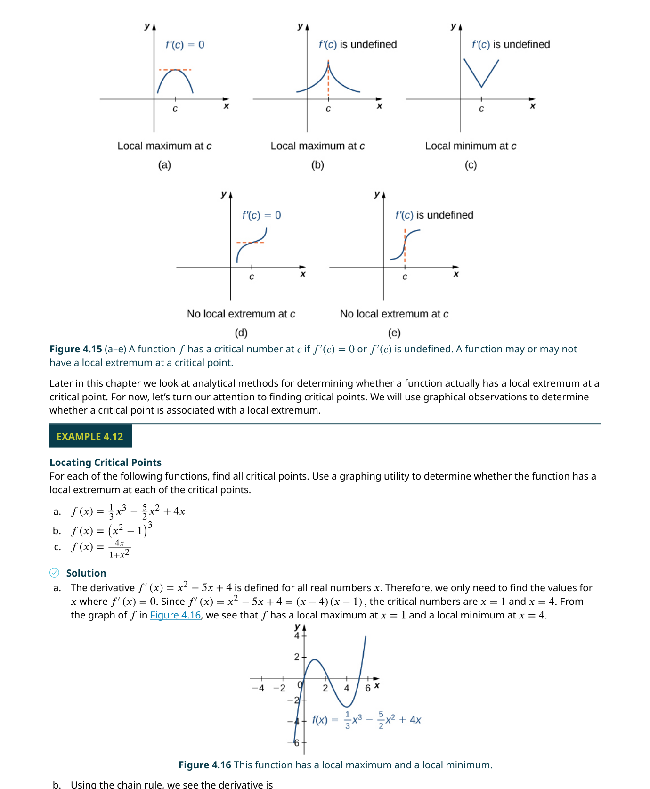
📝 範例
📝 範例 4.13：在閉區間上找絕對極值求 $f(x) = x^2 - 4x + 3$ 在 $[1,3]$ 上的絕對最大值和最小值。
解：$f'(x) = 2x - 4$，設 $f'(x)=0$ 得 $x=2$（在 $[1,3]$ 內）。比較 $f(1)=0$、$f(2)=-1$、$f(3)=0$。絕對最大值為 $0$（發生在 $x=1$ 和 $x=3$），絕對最小值為 $-1$（發生在 $x=2$）。
$f(x) = |x|$ 在 $x=0$ 處導數不存在，但該點是絕對（也是局部）最小值。在檢查臨界點時，必須同時考慮 $f'(c)=0$ 和 $f'(c)$ 不存在的情形——缺少任何一種都會遺漏可能的極值。
4.4 均值定理（The Mean Value Theorem）
均值定理（Mean Value Theorem, MVT）是微積分中最重要的定理之一。它建立了導數與函數值之間的橋樑，並為後續的一階導數檢定法、反導數的唯一性、以及函數增減性判定提供理論基礎。
Rolle 定理——均值定理的特殊情況
Rolle 定理是均值定理的「平坦版本」：如果一個連續可微函數在區間兩端點取值相同，則區間內至少有一點切線是水平的（導數為零）。
若 $f$ 在 $[a,b]$ 上連續、在 $(a,b)$ 內可微，且 $f(a) = f(b)$，則存在至少一個 $c \in (a,b)$ 使得 $f'(c) = 0$。
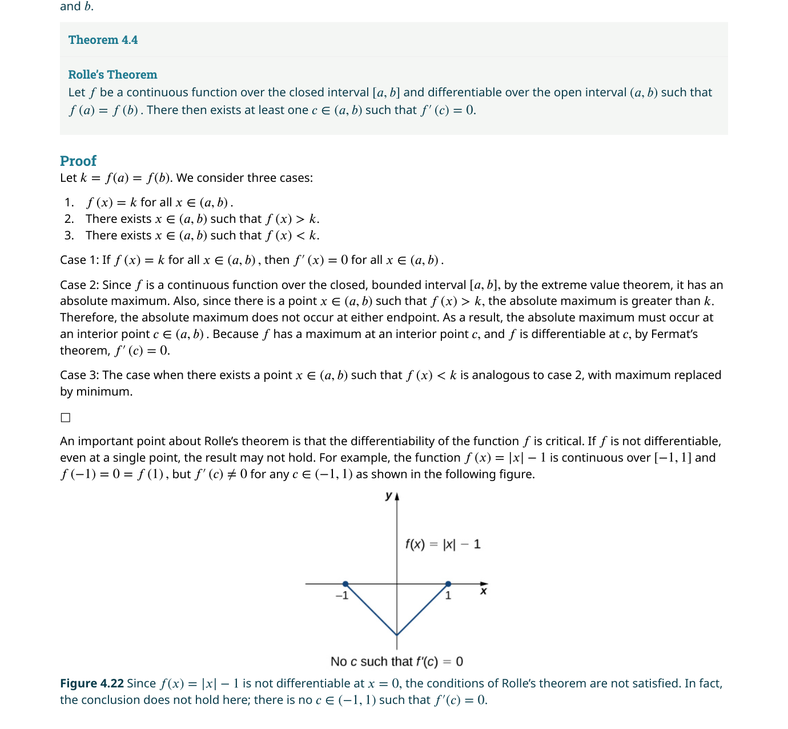
均值定理——「傾斜版」的 Rolle 定理
均值定理告訴我們：在一個區間上，至少存在一點其切線斜率等於連接兩端點的割線斜率。幾何上，這意味著切線平行於割線。
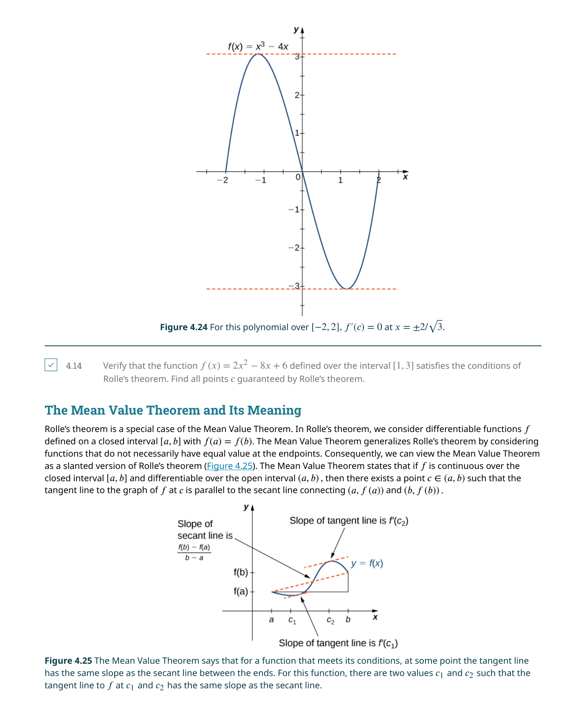
如果你從台北開車到高雄，全程 350 公里花了 3.5 小時，你的平均速度是 100 km/h。均值定理告訴你：在旅程中的某個時刻，你的瞬時速度必定恰好等於 100 km/h。即使你中途停下來休息，只要整個旅程是連續的，這個結論就成立。
📝 範例
📝 範例 4.16：均值定理與自由落體一塊石頭從 100 ft 高處落下，位置函數 $s(t) = -16t^2 + 100$。(a) 何時落地？(b) 平均速度？(c) 均值定理保證何時瞬時速度等於平均速度？
解：(a) $s(t)=0 \Rightarrow t = 2.5$ 秒。(b) $v_{\text{avg}} = \frac{s(2.5)-s(0)}{2.5-0} = \frac{0-100}{2.5} = -40\text{ ft/sec}$。(c) $v(t)=s'(t)=-32t$，設 $-32c = -40$，得 $c = 1.25$ 秒。在 1.25 秒時，石頭的速度恰好等於平均速度。
均值定理的三個推論
推論 1：若 $f'(x)=0$ 對所有 $x \in I$ 成立，則 $f$ 在 $I$ 上為常數。
推論 2：若 $f'(x)=g'(x)$ 對所有 $x \in I$ 成立，則 $f(x)=g(x)+C$——兩函數最多差一個常數。
推論 3：若 $f'(x)>0$ 則 $f$ 遞增；若 $f'(x)<0$ 則 $f$ 遞減。
均值定理要求 $f$ 在閉區間 $[a,b]$ 上連續且在開區間 $(a,b)$ 內可微。缺少任何一個條件都可能使結論不成立。例如 $f(x)=|x|$ 在 $[-1,1]$ 上連續但在 $x=0$ 不可微——不存在 $c$ 使得 $f'(c)=\frac{f(1)-f(-1)}{2}=0$。
4.5 導數與圖形形狀（Derivatives and the Shape of a Graph）
導數不僅告訴我們變化率——它還完整地描繪了函數圖形的幾何面貌：在哪裡上升、在哪裡下降、在哪裡轉彎、轉彎的方向是向上還是向下。這一節將一階導數和二階導數轉化為理解函數圖形的透鏡。
一階導數檢定法（First Derivative Test）
均值定理的推論 3 告訴我們：$f'(x)>0$ 表示 $f$ 遞增，$f'(x)<0$ 表示 $f$ 遞減。由此產生一階導數檢定法來判斷臨界點的性質：
設 $c$ 為 $f$ 的臨界點（$f'(c)=0$ 或 $f'(c)$ 不存在），且 $f$ 在 $c$ 處連續：
- 若 $f'$ 在 $c$ 左側為正、右側為負 → $c$ 為局部極大
- 若 $f'$ 在 $c$ 左側為負、右側為正 → $c$ 為局部極小
- 若 $f'$ 兩側符號相同 → $c$ 不是局部極值

凹性與反曲點（Concavity and Inflection Points）
知道函數在哪裡上升和下降還不夠——我們還需要知道圖形是向上彎曲（concave up）還是向下彎曲（concave down）。凹性由二階導數決定。
若 $f''(x) > 0$ 在區間 $I$ 上，則 $f$ 在 $I$ 上凹向上（concave up）——圖形像一個杯子，能接住水。
若 $f''(x) < 0$ 在區間 $I$ 上，則 $f$ 在 $I$ 上凹向下（concave down）——圖形像一個倒扣的碗。
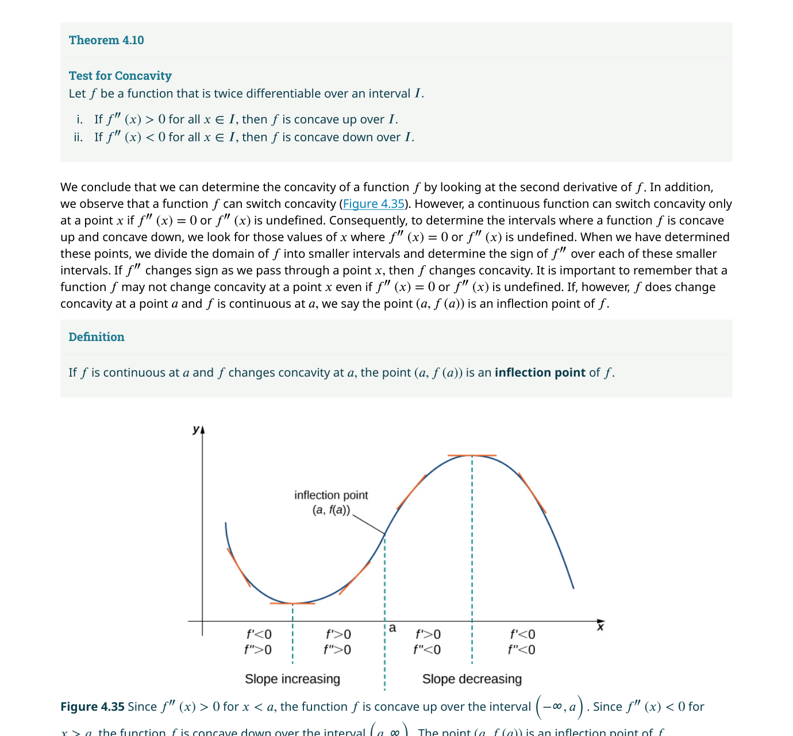
二階導數檢定法（Second Derivative Test）
當一階導數檢定法較難執行時（例如導數表達式複雜），可以使用二階導數來判斷臨界點的性質：
設 $f'(c)=0$ 且 $f''$ 在包含 $c$ 的開區間上連續：
- $f''(c) > 0 \Rightarrow f$ 在 $c$ 處有局部極小
- $f''(c) < 0 \Rightarrow f$ 在 $c$ 處有局部極大
- $f''(c) = 0 \Rightarrow$ 檢定法無法判斷（需使用一階導數檢定法）
📝 範例
📝 範例 4.20：使用二階導數檢定法求 $f(x) = x^5 - 5x^3$ 的所有局部極值。
解：$f'(x) = 5x^4 - 15x^2 = 5x^2(x^2 - 3)$。臨界點：$x = 0, \pm\sqrt{3}$。$f''(x) = 20x^3 - 30x$。
$f''(-\sqrt{3}) = 20(-3\sqrt{3}) - 30(-\sqrt{3}) = -30\sqrt{3} < 0$ → 局部極大。
$f''(0) = 0$ → 二階檢定無法判斷（實際上 $x=0$ 不是極值，因為 $f'$ 在 $x=0$ 兩側符號相同——都是負）。
$f''(\sqrt{3}) = 20(3\sqrt{3}) - 30(\sqrt{3}) = 30\sqrt{3} > 0$ → 局部極小。
二階導數檢定法在 $f''(c)=0$ 時無法下結論。例如 $f(x)=x^4$ 在 $x=0$ 處 $f'(0)=0$、$f''(0)=0$，但 $x=0$ 是局部（也是絕對）最小值。當二階檢定失效時，必須回歸一階導數檢定法。
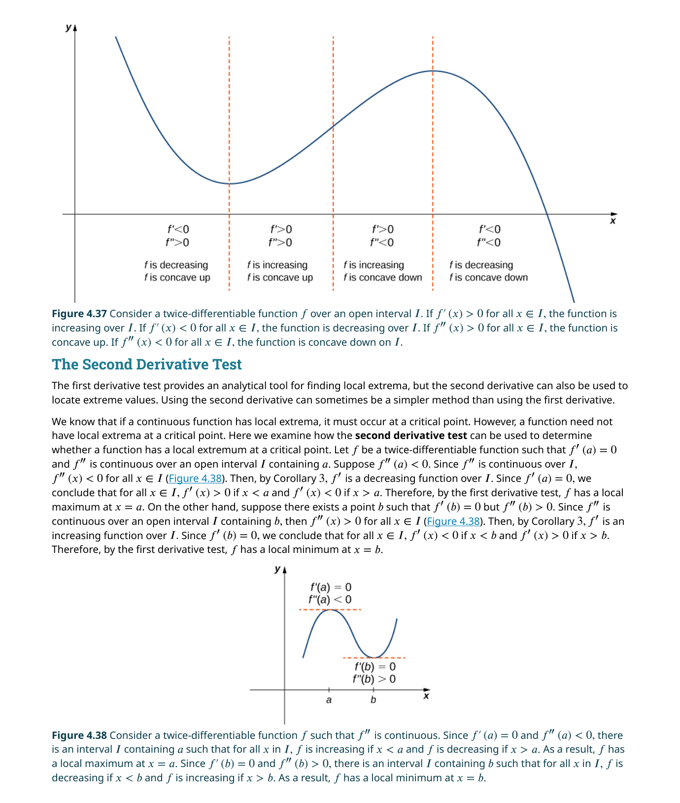
4.6 無窮遠處的極限與漸近線（Limits at Infinity and Asymptotes）
函數在 $x \to \pm\infty$ 時的行為——稱為末端行為（end behavior）——是繪製完整函數圖形的最後一塊拼圖。這一節系統性地處理了水平漸近線、斜漸近線，以及各類函數（多項式、有理函數、代數函數、超越函數）的末端行為。
水平漸近線（Horizontal Asymptotes）
如果 $\lim_{x \to \infty} f(x) = L$ 或 $\lim_{x \to -\infty} f(x) = L$（$L$ 為有限數），則直線 $y = L$ 是 $f$ 的水平漸近線。
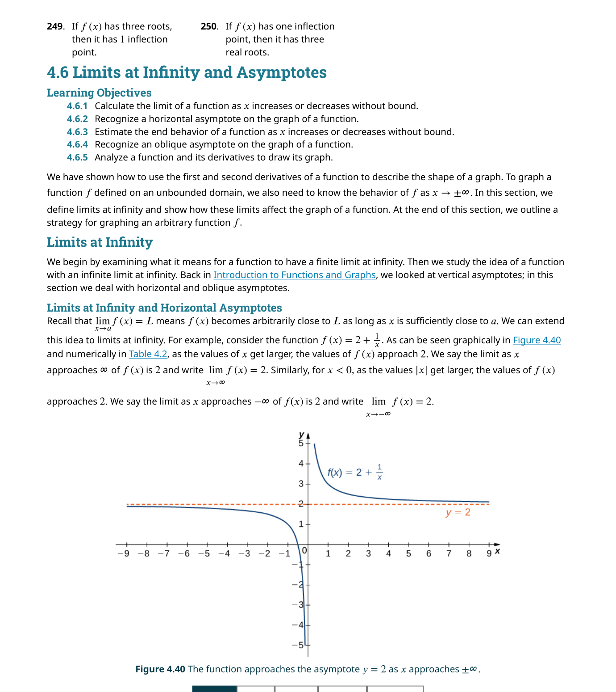
有理函數的末端行為規則
對於有理函數 $f(x) = \frac{P(x)}{Q(x)} = \frac{a_n x^n + \cdots}{b_m x^m + \cdots}$：
- 若 $n < m$：$\lim_{x \to \pm\infty} f(x) = 0$，水平漸近線 $y=0$
- 若 $n = m$：$\lim_{x \to \pm\infty} f(x) = \frac{a_n}{b_m}$，水平漸近線 $y = \frac{a_n}{b_m}$
- 若 $n = m+1$：有斜漸近線（oblique asymptote），可透過多項式長除法求得
- 若 $n > m+1$：$\lim_{x \to \pm\infty} f(x) = \pm\infty$，末端行為由 $\frac{a_n}{b_m}x^{n-m}$ 主導
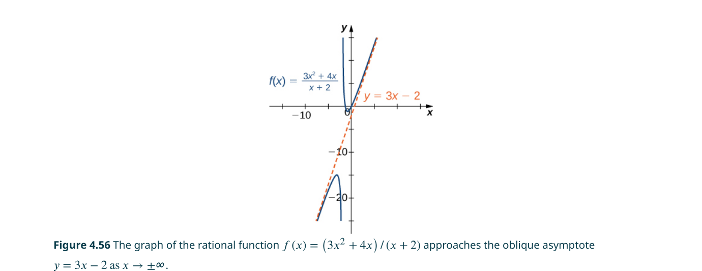
📝 範例
📝 範例 4.25：有理函數的末端行為求 $\lim_{x \to \infty} \frac{3x^2 + 2x - 1}{5x^2 - 4x + 7}$。
解：分子和分母同除以 $x^2$：$\lim_{x \to \infty} \frac{3 + \frac{2}{x} - \frac{1}{x^2}}{5 - \frac{4}{x} + \frac{7}{x^2}} = \frac{3 + 0 - 0}{5 - 0 + 0} = \frac{3}{5}$。水平漸近線為 $y = \frac{3}{5}$。
現在我們有了一套完整的繪圖工具箱：(1) 找定義域與截距，(2) 檢查末端行為與漸近線，(3) 用 $f'$ 找臨界點、遞增/遞減區間和局部極值，(4) 用 $f''$ 找凹性和反曲點。這六步流程讓你能夠準確繪製幾乎任何初等函數的圖形。
超越函數的末端行為
指數函數 $e^x$ 的增長速度遠超過任何冪函數 $x^n$：$\lim_{x \to \infty} \frac{e^x}{x^n} = \infty$。另一方面，對數函數 $\ln x$ 的增長速度遠慢於任何正次冪函數：$\lim_{x \to \infty} \frac{\ln x}{x^p} = 0$（$p>0$）。
許多初學者誤以為函數圖形不能穿越其水平漸近線——這和垂直漸近線混淆了。垂直漸近線確實不能被穿越（因為函數在該處未定義或趨向無窮），但水平漸近線只描述「$x \to \pm\infty$ 時的最終行為」，函數可以在中間穿越它任意多次。
水平漸近線的判定：若 $\lim_{x \to \infty} f(x) = L$（$L$ 為有限值），則 $y = L$ 是一條水平漸近線。對於有理函數，比較分子與分母的最高次數即可快速判斷：分子次數 < 分母次數 → $y=0$；次數相等 → $y =$ 領導係數比；分子次數 > 分母次數 → 無水平漸近線（但有斜漸近線）。
4.7 應用最佳化問題（Applied Optimization Problems）
最佳化（Optimization）——在給定約束下最大化或最小化某個量——是導數在現實世界最直接的應用。無論是設計包裝以節省材料、定價以最大化營收、還是規畫路線以最小化時間，基本思路都是：將問題轉化為單變數函數，然後使用導數找極值。
- 引入所有變量，必要時畫圖標註
- 確定要最大化或最小化的量
- 寫出該量的公式（可能含多個變量）
- 利用約束條件將公式化簡為單變數函數
- 確定定義域（考慮物理限制）
- 求導數、找臨界點、比較端點值，確定極值
範例 1：花園面積最大化
用 $100\text{ ft}$ 的圍欄建造一個矩形花園，其中一面靠石牆（不需要圍欄）。求最大面積的尺寸。
設垂直牆的邊長為 $x$，平行牆的邊長為 $y$。約束條件：$2x + y = 100$，即 $y = 100 - 2x$。面積 $A = xy = x(100-2x) = 100x - 2x^2$。$A'(x) = 100 - 4x = 0 \Rightarrow x = 25$。此時 $y = 50$，最大面積 $A = 1250\text{ ft}^2$。
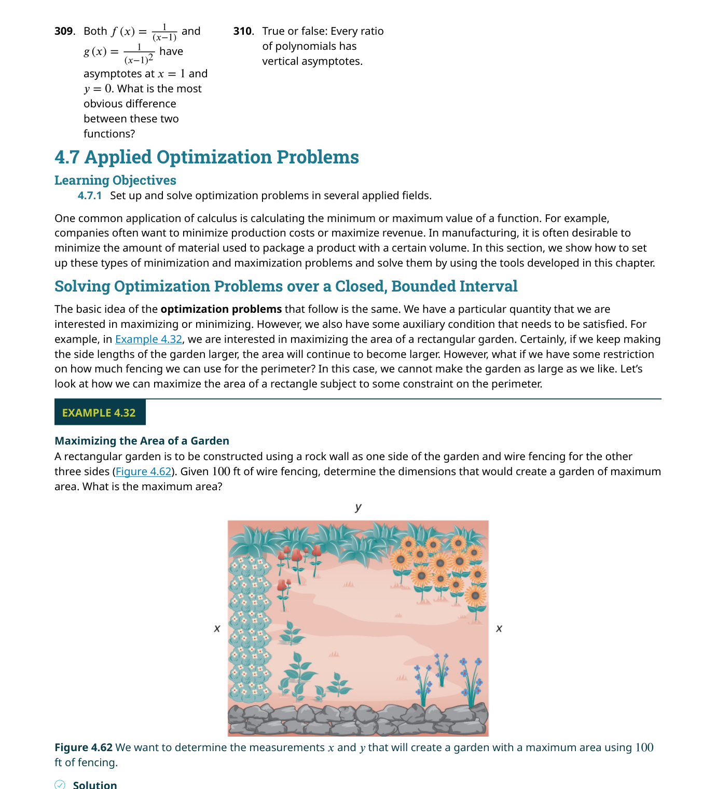
範例 2：開頂盒最大體積
從一張 $24'' \times 36''$ 的紙板四角各切去一個邊長為 $x$ 的正方形，摺起邊緣形成開頂盒。求最大體積。
盒子的長 $= 36-2x$，寬 $= 24-2x$，高 $= x$。體積 $V(x) = x(36-2x)(24-2x) = 4x(18-x)(12-x) = 4x(216 - 30x + x^2) = 864x - 120x^2 + 4x^3$。$V'(x) = 864 - 240x + 12x^2 = 0$。除以 $12$：$x^2 - 20x + 72 = 0$，解得 $x = 10 \pm 2\sqrt{7}$。由於 $x < 12$（否則寬度為負），$x = 10 - 2\sqrt{7} \approx 4.71$ 英吋為可行解，最大體積約 $V \approx 1810\text{ in}^3$。
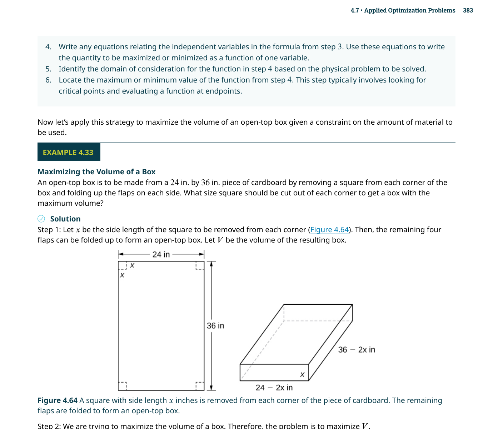
📝 範例
📝 範例 4.35：租車營收最大化租車公司發現：若每天收費 $p$ 美元（$50 \le p \le 200$），每天能租出的車輛數為 $n(p) = 1000 - 5p$。求最大化每日營收的定價。
解：營收 $R(p) = p \cdot n(p) = p(1000 - 5p) = 1000p - 5p^2$。$R'(p) = 1000 - 10p = 0 \Rightarrow p = 100$。檢查端點：$R(50) = 37500$，$R(100) = 50000$，$R(200) = 0$。最佳定價為 $\$100$/天。
範例 3：最小化表面積
一個方形底、開頂的盒子，容積為 $216\text{ in}^3$。求最小表面積的尺寸。
設底邊長為 $x$，高為 $h$。約束：$x^2 h = 216$，即 $h = \frac{216}{x^2}$。表面積 $S = x^2 + 4xh = x^2 + 4x(\frac{216}{x^2}) = x^2 + \frac{864}{x}$。$S'(x) = 2x - \frac{864}{x^2} = 0 \Rightarrow 2x^3 = 864 \Rightarrow x^3 = 432 \Rightarrow x = \sqrt[3]{432} = 6\sqrt[3]{2} \approx 7.56$ 英吋。此時 $h = \frac{216}{x^2} = \frac{216}{432^{2/3}} = 3\sqrt[3]{2} \approx 3.78$ 英吋。有趣的是：$h = \frac{x}{2}$——最佳開頂盒的高度恰好是底邊長的一半。
在許多最佳化問題中，最優解往往具有對稱性。對於給定體積的閉頂盒，表面積最小的是正立方體。對於給定周長的矩形，面積最大的是正方形。認識這些模式可以幫助你快速檢查答案的合理性。
最佳化問題中，最大值或最小值可能在閉區間的端點，而不在臨界點。例如 $f(x) = x$ 在 $[0,1]$ 上的最大值在 $x=1$（端點），而 $f'(x)=1$ 永遠不為零。每次都要比較臨界點值和端點值。
4.8 羅必達法則（L'Hôpital's Rule）
當我們遇到 $\frac{0}{0}$ 或 $\frac{\infty}{\infty}$ 這種「不定型」極限時，羅必達法則提供了一個直接而強大的工具：對分子和分母分別求導數，然後再取極限。這個法則不僅簡化了許多極限的計算，還能處理其他不定型如 $0 \cdot \infty$、$\infty - \infty$、$0^0$、$1^\infty$ 和 $\infty^0$。
若 $\lim_{x \to a} f(x) = 0$ 且 $\lim_{x \to a} g(x) = 0$（或兩者皆趨向 $\pm\infty$），且 $f$ 和 $g$ 在 $a$ 附近（除可能 $a$ 本身外）可微，$g'(x) \neq 0$，則：
當 $f(a)=g(a)=0$ 時，在 $a$ 附近：$f(x) \approx f'(a)(x-a)$ 且 $g(x) \approx g'(a)(x-a)$（線性近似），因此 $\frac{f(x)}{g(x)} \approx \frac{f'(a)(x-a)}{g'(a)(x-a)} = \frac{f'(a)}{g'(a)}$。羅必達法則本質上就是比較兩個函數在該點附近「誰趨向零更快」。
📝 範例
📝 範例 4.38：基本 $\frac{0}{0}$ 型求 $\lim_{x \to 1} \frac{x^3 - 1}{x^2 - 1}$。
解：代入 $x=1$ 得 $\frac{0}{0}$。應用羅必達法則：$\lim_{x \to 1} \frac{3x^2}{2x} = \lim_{x \to 1} \frac{3x}{2} = \frac{3}{2}$。也可以因式分解驗證：$\frac{(x-1)(x^2+x+1)}{(x-1)(x+1)} = \frac{x^2+x+1}{x+1} \to \frac{3}{2}$。
📝 範例
📝 範例 4.38(d)：需要多次使用羅必達法則求 $\lim_{x \to 0} \frac{1 - \cos x}{x^2}$。
解：代入 $x=0$ 得 $\frac{0}{0}$。第一次羅必達：$\lim_{x \to 0} \frac{\sin x}{2x}$，仍是 $\frac{0}{0}$。第二次羅必達：$\lim_{x \to 0} \frac{\cos x}{2} = \frac{1}{2}$。
其他不定型的處理
對於 $0 \cdot \infty$ 型（如 $\lim_{x \to 0^+} x \ln x$），將其改寫為 $\frac{0}{0}$ 或 $\frac{\infty}{\infty}$ 的形式。例如 $x \ln x = \frac{\ln x}{1/x}$，然後使用羅必達法則。
對於指數型不定型（$0^0, 1^\infty, \infty^0$），利用 $y = [f(x)]^{g(x)}$，取自然對數 $\ln y = g(x) \ln f(x)$，先求 $\lim \ln y$，再用 $y = e^{\ln y}$ 還原。
📝 範例
📝 範例 4.44：$1^\infty$ 型求 $\lim_{x \to 0^+} (1 + \sin 4x)^{\cot x}$。
解：令 $y = (1 + \sin 4x)^{\cot x}$，則 $\ln y = \cot x \cdot \ln(1 + \sin 4x) = \frac{\ln(1 + \sin 4x)}{\tan x}$。當 $x \to 0^+$，這是 $\frac{0}{0}$ 型。使用羅必達法則後可得 $\lim \ln y = 4$，因此 $\lim y = e^4$。
函數增長速率的比較
羅必達法則可以用來比較不同類型函數在無窮遠處的增長速率。一個深刻的結論是：
當 $x \to \infty$ 時：$\ln x \ll x^p \text{（任意 } p>0\text{）} \ll b^x \text{（任意 } b>1\text{）} \ll x^x$
羅必達法則只能用於 $\frac{0}{0}$ 或 $\frac{\infty}{\infty}$ 的不定型。如果你遇到 $\lim_{x \to 0} \frac{\sin x}{x+1} = \frac{0}{1} = 0$，這不是不定型——不需要（也不能）使用羅必達法則。錯誤地使用會得到 $\lim \frac{\cos x}{1} = 1$，與正確答案完全不同。
4.9 牛頓法（Newton's Method）
對於大多數方程式 $f(x)=0$，我們無法用代數方法求得精確解。牛頓法（Newton's Method）利用切線逼近來迭代地收斂到根——這個方法極其高效，是計算器和電腦內部求根的標準演算法。
牛頓法的迭代公式
從一個初始猜測值 $x_0$ 開始，畫出 $f$ 在 $(x_0, f(x_0))$ 處的切線，找到這條切線與 $x$ 軸的交點作為下一個近似值 $x_1$。重複此過程：
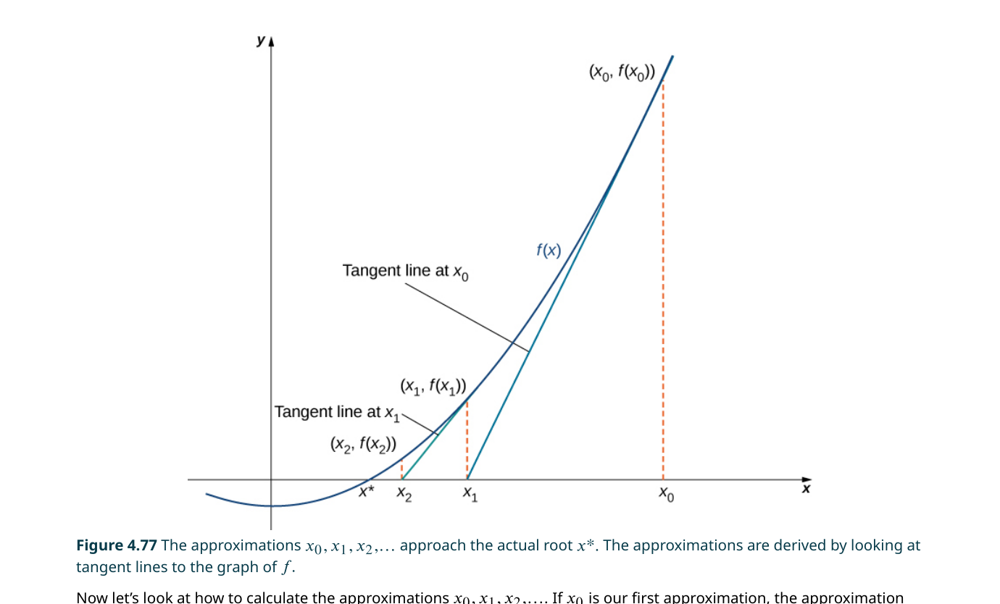
📝 範例
📝 範例 4.46：求多項式的根用牛頓法求 $f(x) = x^3 - 2x - 5$ 在 $[1,3]$ 內的根，以 $x_0 = 2$ 為初始猜測值。
解：$f'(x) = 3x^2 - 2$。$x_1 = 2 - \frac{2^3 - 2(2) - 5}{3(2^2) - 2} = 2 - \frac{8-4-5}{12-2} = 2 - \frac{-1}{10} = 2.1$。
$x_2 = 2.1 - \frac{(2.1)^3 - 2(2.1) - 5}{3(2.1)^2 - 2} = 2.1 - \frac{9.261 - 4.2 - 5}{13.23 - 2} = 2.1 - \frac{0.061}{11.23} \approx 2.09457$。
$x_3 \approx 2.09455$。收斂極快——三次迭代就達到五位小數精度。
📝 範例
📝 範例 4.47：求平方根用牛頓法求 $\sqrt{2}$。令 $f(x) = x^2 - 2$，以 $x_0 = 1.5$ 開始。
解：$f'(x) = 2x$。$x_1 = 1.5 - \frac{2.25 - 2}{3} = 1.5 - 0.08333 = 1.41667$。$x_2 = 1.41667 - \frac{2.00694 - 2}{2.83334} = 1.41422$。$x_3 \approx 1.41421$。真實值 $\sqrt{2} \approx 1.41421356$。
牛頓法可能失敗的情形
牛頓法雖然強大，但在以下情況可能失敗：(1) $f'(x_n) = 0$——切線平行於 $x$ 軸，無法找到交點；(2) 初始猜測值離目標根太遠，導致收斂到另一個根；(3) 迭代在兩個值之間來回振盪，永遠不收斂（如 $f(x) = \sqrt[3]{x}$ 從 $x_0 = 1$ 開始）。
牛頓法具有二次收斂（quadratic convergence）——每次迭代後，正確的小數位數大約翻倍。這就是為什麼在上述範例中，僅三次迭代就從一位精度跳到五位精度。這種極快的收斂速度使牛頓法成為數值計算中最有價值的演算法之一。
牛頓法對初始猜測值 $x_0$ 非常敏感。如果 $x_0$ 離真正的根太遠，或者 $f'(x_0)$ 非常接近零，迭代可能不收斂或收斂到錯誤的根。一個好的做法是先用圖形或二分法找到根的粗略位置，再用牛頓法精煉。永遠不要從 $x_0$ 使得 $f'(x_0)=0$ 的地方開始。
牛頓法的幾何直覺：在當前猜測點 $x_n$ 處畫切線，切線與 $x$ 軸的交點就是下一個更好的猜測 $x_{n+1}$。如果函數在根附近「行為良好」（導數不為零、不太彎曲），這個過程會以極快的速度收斂——每次迭代，正確位數約翻倍（二次收斂）。
何時牛頓法失效：如果 $f'(x_n) = 0$（切線水平，永遠碰不到 $x$ 軸），或初始猜測點選在極值點附近，演算法會發散。此外，若函數有多個根，不同的初始猜測可能收斂到不同的根。實務上建議先用圖形確認根的大概位置再啟動牛頓法。
4.10 反導數（Antiderivatives）
截至目前，我們一直在問：「給定函數 $f$，它的導數是什麼？」現在我們反過來問：「給定函數 $f$，什麼函數的導數等於 $f$？」這個逆向問題引出了反導數（antiderivative）的概念，它是積分學的起點。
函數 $F$ 是 $f$ 在區間 $I$ 上的反導數（antiderivative），如果對所有 $x \in I$ 都有 $F'(x) = f(x)$。
均值定理的推論 2 保證了：如果 $F$ 和 $G$ 都是 $f$ 的反導數，則它們最多相差一個常數——即 $G(x) = F(x) + C$。因此，$F(x) + C$ 給出了 $f$ 的所有反導數。
不定積分
我們使用不定積分（indefinite integral）符號來表示反導數的全體：
📝 範例
📝 範例 4.52：計算不定積分求 $\int (5x^4 - 3x^2 + 2x - 7)\,dx$。
解：逐項積分：$\int 5x^4 dx = 5 \cdot \frac{x^5}{5} = x^5$，$\int (-3x^2) dx = -3 \cdot \frac{x^3}{3} = -x^3$，$\int 2x dx = 2 \cdot \frac{x^2}{2} = x^2$，$\int (-7) dx = -7x$。因此 $\int (5x^4 - 3x^2 + 2x - 7)dx = x^5 - x^3 + x^2 - 7x + C$。
初始值問題（Initial-Value Problems）
反導數在應用中的一個關鍵用途是解微分方程式。最簡單的微分方程式是 $y' = f(x)$——給定導數求原函數。如果再加上一個初始條件 $y(x_0) = y_0$，我們就可以確定積分常數 $C$ 的具體值。
📝 範例
📝 範例 4.54：汽車煞車問題一輛汽車以 $88\text{ ft/sec}$（60 mph）行駛，踩煞車後以恆定 $15\text{ ft/sec}^2$ 減速。(a) 多久後停下？(b) 煞車距離？
解：加速度 $a(t) = -15$。積分得速度 $v(t) = \int -15\,dt = -15t + C_1$。由 $v(0)=88$ 得 $C_1=88$，故 $v(t)=88-15t$。(a) $v(t)=0 \Rightarrow t=\frac{88}{15} \approx 5.87$ 秒。
再積分得位置 $s(t)=\int (88-15t)dt = 88t - \frac{15}{2}t^2 + C_2$。設 $s(0)=0$ 得 $C_2=0$。(b) $s(\frac{88}{15}) = 88(\frac{88}{15}) - \frac{15}{2}(\frac{88}{15})^2 = \frac{88^2}{15} - \frac{88^2}{30} = \frac{88^2}{30} \approx 258.1\text{ ft}$。
反導數（不定積分）是第 5 章定積分（definite integral）的理論基礎。微積分基本定理（Fundamental Theorem of Calculus）將揭示微分和積分之間的深刻聯繫：$\int_a^b f(x)dx = F(b) - F(a)$，其中 $F$ 是 $f$ 的反導數。此刻你學到的每一個反導數公式，都將在未來計算面積、體積和物理量時反覆使用。
不定積分計算中最常見的錯誤就是忘記加上積分常數 $C$。$C$ 不是可選的裝飾——它是反導數家族的核心。在初始值問題中，$C$ 的具體值由初始條件決定；如果你忘記了 $C$，你將無法滿足初始條件。養成習慣：每次寫不定積分結果時都加上 $+C$。
📋 關鍵概念回顧（Key Concepts）
- 相關變率：當兩個變量隨時間變化且彼此相關時，利用連鎖律將變化率聯繫起來求解。
- 線性近似：\(f(x) \approx f(a)+f'(a)(x-a)\)，用切線逼近函數值，在 a 附近效果最佳。
- 微分：\(dy=f'(x)\,dx\)，表示當 x 改變 dx 時，切線上 y 的變化量。
- 極值：絕對極值是整個定義域上的最大或最小值；相對極值是在某開區間內局部的最大或最小值。
- 臨界點：使得 \(f'(c)=0\) 或 \(f'(c)\) 不存在的點；極值只能發生在臨界點或端點。
- 極值定理：在閉區間上連續的函數必定有絕對最大值與絕對最小值。
- 羅爾定理：若 \(f(a)=f(b)\) 且 f 在 \([a,b]\) 連續、\((a,b)\) 內可微，則存在 c 使得 \(f'(c)=0\)。
- 均值定理（MVT）：存在 c 在 \((a,b)\) 內使得 \(f'(c)=\frac{f(b)-f(a)}{b-a}\)；即瞬時變化率等於平均變化率。
- 一階導數檢定：由 \(f'\) 的正負號判斷函數在該點的遞增遞減及相對極值類型。
- 二階導數檢定：若 \(f'(c)=0\) 且 \(f''(c)>0\) 則極小，\(f''(c) \lt 0\) 則極大。
- 凹性與反曲點：\(f''>0\) 凹向上，\(f'' \lt 0\) 凹向下；反曲點是凹性改變處。
- 最佳化：將實際問題轉化為求函數極值的數學問題，須注意定義域與邊界條件。
- 羅必達法則：對 \(\frac{0}{0}\) 或 \(\frac{\infty}{\infty}\) 不定型，\(\lim\frac{f}{g}=\lim\frac{f'}{g'}\)（若極限存在）。
- 牛頓法：以迭代 \(x_{n+1}=x_n-\frac{f(x_n)}{f'(x_n)}\) 逼近方程式 \(f(x)=0\) 的根。
- 反導數：若 \(F'=f\)，則 F 是 f 的反導數；反導數不唯一，差一個常數 C。
- 不定積分：\(\int f(x)\,dx = F(x)+C\)，其中 \(F'=f\)；是微分運算的逆運算。
📐 關鍵公式（Key Equations）
| 公式 | 說明 |
|---|---|
| $$f(x)\approx f(a)+f'(a)(x-a)$$ | 線性近似／切線逼近 |
| $$dy=f'(x)\,dx$$ | 微分的定義 |
| $$\Delta y\approx f'(x)\,dx$$ | 用微分估計函數變化量 |
| $$f'(c)=\frac{f(b)-f(a)}{b-a}$$ | 均值定理：瞬時變化率等於平均變化率 |
| $$\text{若 }f(a)=f(b)\text{，則 }\exists c\in(a,b):f'(c)=0$$ | 羅爾定理 |
| $$\lim_{x\to a}\frac{f(x)}{g(x)}=\lim_{x\to a}\frac{f'(x)}{g'(x)}$$ | 羅必達法則（\(\frac{0}{0}\) 或 \(\frac{\infty}{\infty}\) 型） |
| $$x_{n+1}=x_n-\frac{f(x_n)}{f'(x_n)}$$ | 牛頓法迭代公式 |
| $$\int x^n\,dx=\frac{x^{n+1}}{n+1}+C,\quad n\neq -1$$ | 冪函數的反導數 |
| $$\int \frac{1}{x}\,dx=\ln|x|+C$$ | 倒數函數的反導數 |
| $$\int e^x\,dx=e^x+C$$ | 指數函數的反導數 |
| $$\int \sin x\,dx=-\cos x+C$$ | 正弦函數的反導數 |
| $$\int \cos x\,dx=\sin x+C$$ | 餘弦函數的反導數 |
| $$\int \sec^2 x\,dx=\tan x+C$$ | 正割平方的反導數 |
| $$\int cf(x)\,dx=c\int f(x)\,dx$$ | 反導數的常數倍法則 |
| $$\int [f(x)\pm g(x)]\,dx=\int f(x)\,dx\pm\int g(x)\,dx$$ | 反導數的和差法則 |
本章摘要
本章展開了導數的十種應用，每一種都是微積分工具箱中不可或缺的工具。以下是十個最重要的觀念：
- 相關變率＝鏈鎖律＋關係方程式——先建立方程式，再對時間微分，最後代入數值
- 線性近似$L(x)=f(a)+f'(a)(x-a)$ 是局部逼近的基石——計算機內部就是這樣估算函數值的
- 微分$dy=f'(x)dx$ 用於估計誤差傳播——測量誤差 $\times$ 導數 $=$ 計算誤差
- 極值定理保證閉區間上的連續函數必有極值——但需要檢查臨界點和端點
- 臨界點是 $f'=0$ 或 $f'$ 不存在的點——它們是局部極值的候選，但並非所有臨界點都是極值
- 均值定理是導數與函數值之間的橋樑——它保證了「平均速率等於某時刻瞬時速率」
- $f'$ 的符號決定遞增/遞減，$f''$ 的符號決定凹性——兩者合起來完整描述圖形形狀
- 最佳化＝將問題轉化為單變數函數＋用導數找極值——這是微積分最實用的技能
- 羅必達法則處理 $\frac{0}{0}$ 和 $\frac{\infty}{\infty}$——記住每次使用前都要確認確實是不定型
- 反導數是微分的逆運算——$\int x^n dx = \frac{x^{n+1}}{n+1} + C$，永遠不要忘記 $+C$
| 節 | 核心工具/定理 | 關鍵公式 |
|---|---|---|
| 4.1 相關變率 | 鏈鎖律 | $\frac{dV}{dt} = \frac{dV}{dr}\cdot\frac{dr}{dt}$ |
| 4.2 線性近似 | 切線方程式 | $L(x) = f(a) + f'(a)(x-a)$ |
| 4.3 極值 | 極值定理、費馬定理 | 臨界點：$f'(c)=0$ 或不存在 |
| 4.4 均值定理 | MVT / Rolle | $f'(c) = \frac{f(b)-f(a)}{b-a}$ |
| 4.5 圖形形狀 | 一階/二階檢定法 | $f''>0$ 凹向上 |
| 4.6 漸近線 | 無窮遠處極限 | $\lim_{x \to \infty} f(x) = L$ |
| 4.7 最佳化 | 閉區間極值法 | $A'(x)=0$ 求臨界點 |
| 4.8 羅必達 | 導數比值極限 | $\lim\frac{f}{g} = \lim\frac{f'}{g'}$ |
| 4.9 牛頓法 | 切線迭代 | $x_{n+1} = x_n - \frac{f(x_n)}{f'(x_n)}$ |
| 4.10 反導數 | 不定積分 | $\int x^n dx = \frac{x^{n+1}}{n+1}+C$ |
⚠️ 初學者常見錯誤
在微分之前就把變化的量替換為常數，是相關變率中最致命的錯誤。例如在 $s^2 = x^2 + 4000^2$ 中，如果在微分前代入 $x=3000$，你會得到 $s^2 = 3000^2 + 4000^2$，此時 $x$ 已變成常數，微分後 $\frac{dx}{dt}$ 會消失，導致你得出 $\frac{ds}{dt}=0$ 的荒謬結論。記住：先微分，後代入。
當二階導數檢定法給出 $f''(c)=0$ 時，檢定法無法下結論——不是說 $c$ 沒有極值。$f(x)=x^4$ 在 $x=0$ 處 $f'(0)=0$、$f''(0)=0$，但 $x=0$ 確實是極小值。$f(x)=x^3$ 在 $x=0$ 處也是 $f'(0)=0$、$f''(0)=0$，但 $x=0$ 不是極值。當二階檢定失效時，必須使用一階導數檢定法來判斷。
羅必達法則只能用於 $\frac{0}{0}$ 或 $\frac{\infty}{\infty}$ 的不定型。如果 $\lim_{x \to 2} \frac{x}{x+3} = \frac{2}{5}$，這不是不定型，不需要也不能使用羅必達法則。如果在非不定型的情況下強行使用，你會得到錯誤的答案。在每次使用前，先確認確實是不定型。
$\int x^2 dx = \frac{x^3}{3} + C$，不是 $\frac{x^3}{3}$。$C$ 代表了所有可能的常數偏移。在初始值問題中，$C$ 由初始條件決定；如果你忘記寫 $C$，你得到的答案將無法滿足初始條件。養成習慣永遠加上 $+C$。
在閉區間上的最佳化問題，極值可能發生在臨界點或端點。例如 $f(x)=x$ 在 $[0,1]$ 上，導數 $f'(x)=1$ 永遠不為零，但最大值在 $x=1$（端點）。每次解最佳化問題時，都要建立一個值表，比較所有臨界點和端點的函數值。
✅ 自我檢測（Self-Check）
完成以下題目檢驗你對本章核心概念的掌握程度。點擊展開查看答案。
題 1：在相關變率問題中，應該先微分還是先代入數值？
答案：先微分，後代入。如果在微分前就把變化的量替換為常數，該變量的導數會變成零，導致完全錯誤的結果。這是相關變率中最致命的錯誤。
題 2：使用羅必達法則求 $\displaystyle\lim_{x \to 0}\frac{\sin x}{x}$。
答案：$1$。此為 $\frac{0}{0}$ 不定型，適用羅必達法則：$\lim_{x \to 0}\frac{\sin x}{x} = \lim_{x \to 0}\frac{\cos x}{1} = \cos 0 = 1$。注意：此結果與使用夾擠定理得到的經典極限一致。
題 3：求 $f(x)=x^3-3x$ 在閉區間 $[0,3]$ 上的絕對最大值和最小值。
答案：最大值 $f(3)=18$，最小值 $f(1)=-2$。先求導數 $f'(x)=3x^2-3=3(x-1)(x+1)$，臨界點 $x=1,-1$。在 $[0,3]$ 上，臨界點只有 $x=1$。比較 $f(0)=0$、$f(1)=-2$、$f(3)=27-9=18$，得絕對最小值 $-2$（於 $x=1$），絕對最大值 $18$（於 $x=3$）。
題 4：一個長方形花園一面靠牆，要用 $100$ 公尺的圍籬圍起另外三面。求最大面積時的長與寬各為多少？
答案：寬 $25$ m（垂直牆面），長 $50$ m（平行牆面）。設垂直牆面的邊長為 $x$，平行牆面的邊長為 $y$，則 $2x+y=100$，面積 $A=xy=x(100-2x)=100x-2x^2$。$A'(x)=100-4x=0 \Rightarrow x=25$，$y=50$，最大面積 $1250$ m²。
題 5：圓形金屬板冷卻時，半徑以 $2$ cm/min 的速度收縮。求半徑為 $10$ cm 時，面積的變化率。
答案：$\frac{dA}{dt} = -40\pi$ cm²/min。面積 $A=\pi r^2$，對 $t$ 微分：$\frac{dA}{dt}=2\pi r\frac{dr}{dt}$。代入 $r=10$、$\frac{dr}{dt}=-2$：$\frac{dA}{dt}=2\pi(10)(-2)=-40\pi \approx -125.7$ cm²/min。負號表示面積在減小。
📚 延伸資源
- Khan Academy — Applying derivatives：完整的互動練習，涵蓋相關變率、最佳化、曲線繪圖等
- 3Blue1Brown — Essence of Calculus：YouTube 系列，第 8-10 集以動畫直覺解釋導數的幾何應用
- Paul's Online Notes — Calculus I / Applications of Derivatives：詳細的範例與習題解答
- Desmos Graphing Calculator：即時繪製函數圖形，驗證你對臨界點、凹性和漸近線的分析
- 下一章預告：第 5 章 — 積分將正式引入定積分，揭示微分和積分之間的深刻聯繫（微積分基本定理）